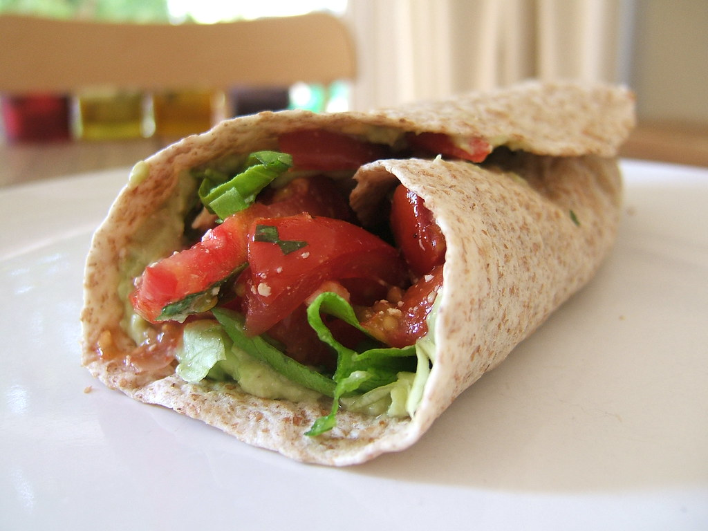

Home
Receita de wrap com ovo muito rápida!

Descrição
Receita para fazer um wrap de ovo em 5 minutos
É aquela refeição perfeita para aqueles dias tranquilos que quer comer algo simples e fácil!
Tempo de Preparação: 5 minutos!
Ingredientes
- 2 ovos
- Algo em pó
- Sal
- Gengibre em Pó
- Salsa ou Orégãos em pó
- Paprika em pó
- Tortilha
- Alface
- Tomate
- Queijo
- Fiambre
Passos
- Mexer o ovo, adicionar as especiarias;
- Coloque um fio de azeite numa frigideira em lume alto;
- Quando o azeite começar a ferver, descer para lume médio e adicionar o ovo, fatia de queio e fiambre;
- Deixar cozinhar 2 a 3 minutos, depois virar ou dobrar
- Fazer corte no wrap do centro para uma das extremidades
- Juntar o ovo num dos lados de onde está o corte. Dobrar para cima
- Adicionar alface, dobrar para o lado;
- Adicionar tomate, dobrar para baixo;
- Parabéns, tem um wrap em 5 minutos!